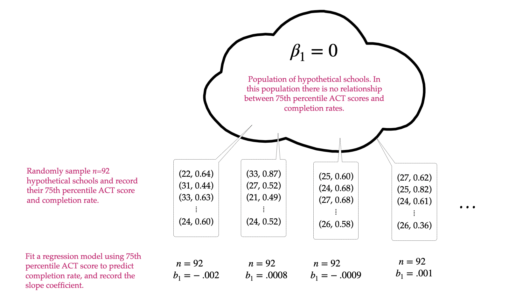
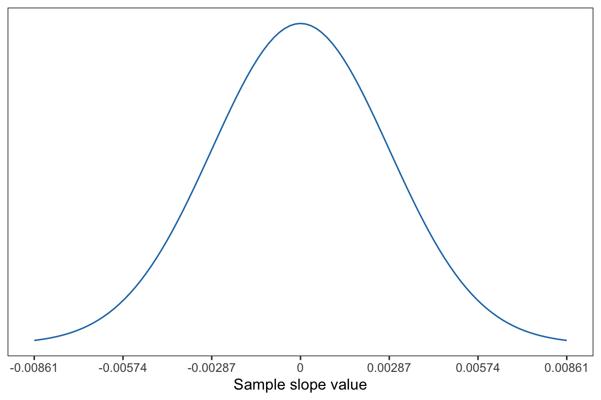
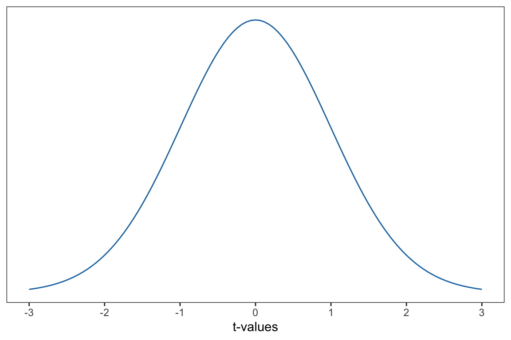
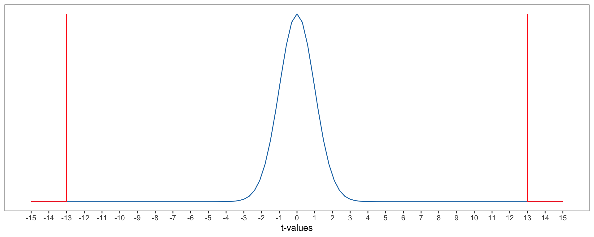
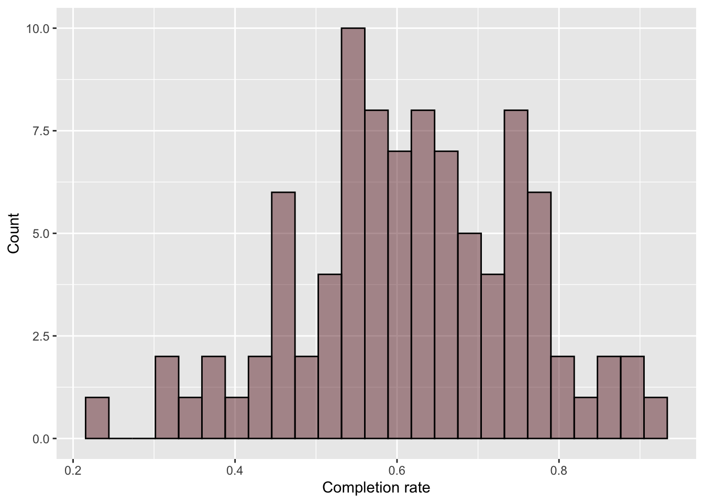
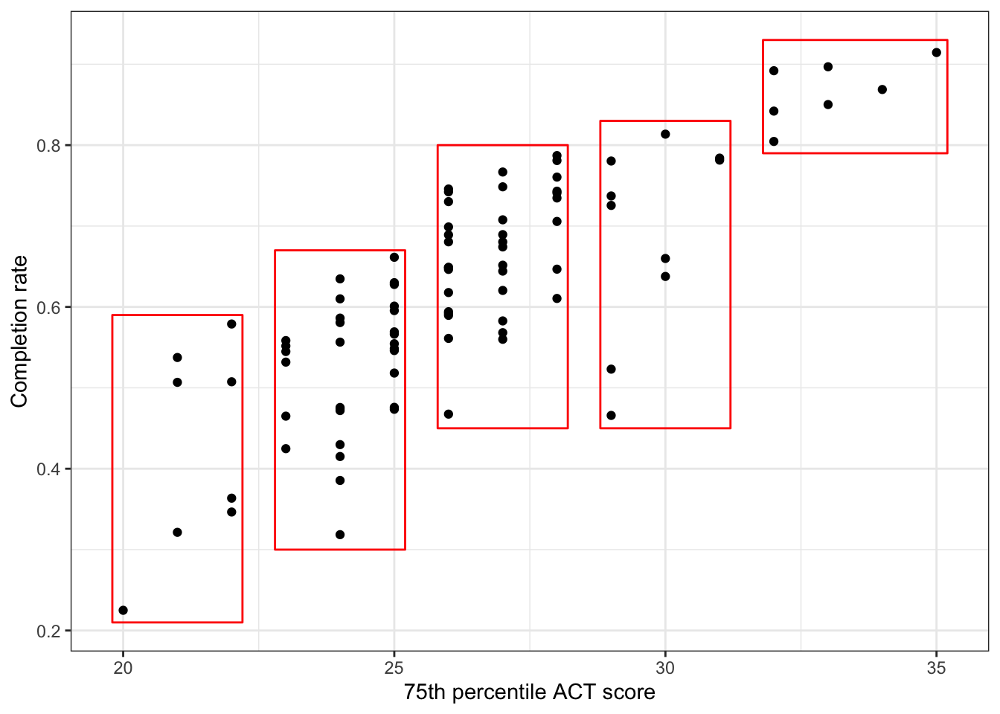
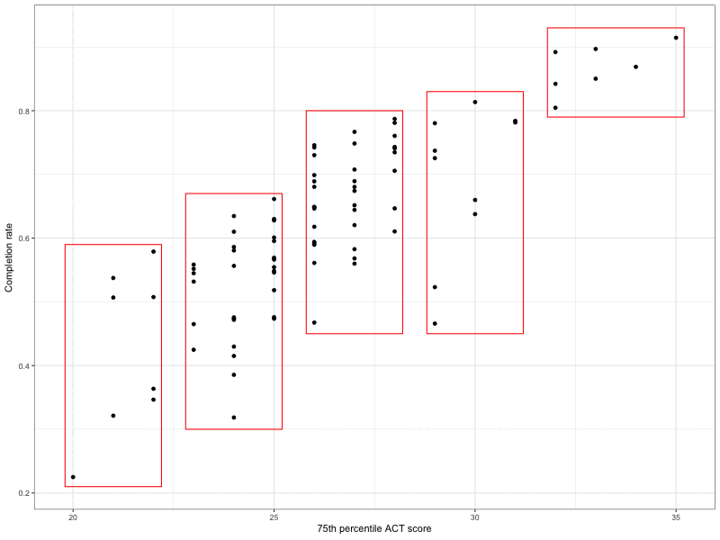
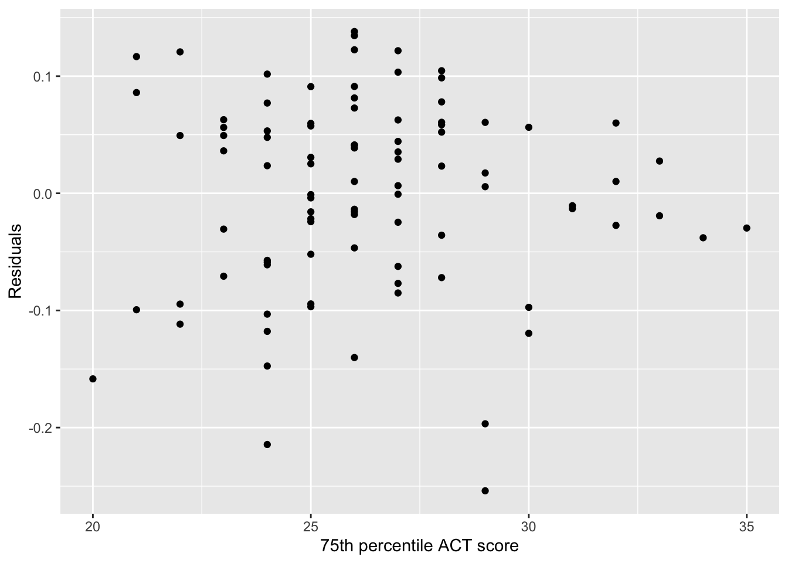

In this chapter you will learn about using statistical inference to test whether the effect of the predictor in a simple linear regression is only due to sampling error.
27.1 Recap: College Completion Rates and ACT Scores
In Chapter 25, we fitted a linear regression model to answer the research question of whether ACT scores are predictive of better institutional outcomes.
The results of the regression analysis suggested that each 1-point difference in 75th percentile ACT scores of education is associated with a 0.037-unit difference in completion rates, on average.
The slope coefficient is often referred to as the effect of the predictor. In our example, the sample effect of 75th percentile ACT scores on completion rates is 0.037. Note that although it is referred to as an “effect”, that this nomenclature has nothing to do with cause-and-effect (i.e., it is not causal).
27.2 Hypothesis Test of the Slope
In regression analyses, it is common to evaluate whether the slope parameter is really different from 0, or whether the sample effect is only due to sampling variation. A research question might be:
Is there an effect of 75th percentile ACT scores on college completion rates for the population of colleges?
Since a slope of 0 would indicate no relationship (i.e., no effect) between the predictor and outcome, evaluating whether or not \(\beta_1=0\) would give us insight about the answer to this research question. We will perform a hypothesis test to evaluate whether the population slope is different from 0. The null and alternative hypotheses for this test are:
We proceed with this test using the same process we use with every other hypothesis test:
Assume the null hypothesis is true.
Find a distribution of the sample statistic (in this case \(b_1\)) based on this assumption.
Compare the observed sample statistic (our \(b_1\) of 0.037) to the other slopes in the distribution creates based on the null hypothesis.
Obtain a p-value.
Make a decision based on the p-value and communicate your conclusion in context.
27.2.1 Distribution of the Slope Under the Null Hypothesis
The thought experiment for this test is shown in Figure 27.1.

Figure 27.1: Thought experiment underlying the hypothesis test for the slope.
Plotting the slopes from these samples gives us the sampling distribution for the slope (see Figure 27.2). This distribution is symmetric with a mean of 0 (the value assumed in the null hypothesis). The standard error for this distribution is estimated based on the sample data and quantifies the uncertainty (i.e., the variation that is due to random sampling). In our example, the SE is 0.00287.

Figure 27.2: Sampling distribution of the slope under the null hypothesis. The mean of this distribution is 0 and the SE is 0.00287, which was estimated from the sample data.
27.2.2 Compare Observed Slope to Other Slopes in the Distribution
Based on the sampling distribution of the slope, we expect that if the null hypothesis is true, we expect slopes in the range of \(-.00861\) and .000861. Our observed slope of .0374 is quite large relative to what we expect if the null hypothesis is true.
To further quantify how large our slope of .0374 is relative to what we expect, we convert each of the sample slopes in the sampling distribution to a t-value by using the formula:
\[
t = \frac{b_1}{SE}
\]
For example, to convert our observed slope of 0.0374 to a t-value, we use:
\[
\begin{split}
t &= \frac{0.0374}{0.00287} \\[1ex]
&= 13
\end{split}
\]
This value indicates that our observed slope of 0.0374, is 13 standard errors higher than the mean of 0. After converting all of the sample slopes in the sampling distribution to t-values, we get a t-distribution. The t-distribution is shown in Figure 27.3.

Figure 27.3: T-distribution under the null hypothesis. This distribution is based on 90 degrees-of-freedom.
Recall that the exact shape of the t-distribution is based on the degrees-of-freedom (df). For the t-distribution for the slope, the df are calculated as:
\[
\textit{df} = n - p - 1
\]
where n is the sample size and p is the number of predictors. So for our t-distribution, the degrees-of-freedom are:
To evaluate whether the observed slope of 0.037 is consistent with the null hypothesis, we compute the probability of seeing a slope t-value as extreme or more extreme than 13 if the null hypothesis is true (the p-value). This is depicted in Figure 27.4.

Figure 27.4: Sampling distribution of the slope under the null hypothesis. The observed slope of 0.037 is shown as a vertical line in this distribution. Since the test was two-tailed, the slope of -0.037 is also demarcated. The p-value is shown as the shaded area under the curve that is at least as extreme os those slopes.
To compute the p-value (along with the SE and t-value), we use the tidy() function from the {broom} package. To use this function we load the {broom} package (you may need to install it) and then provide the tidy() function the name of our fitted model. The syntax to do this for our example is shown below.
# Load librarylibrary(broom)# Get coefficient informationtidy(lm.a)
Note that tidy() outputs information for both the intercept and slope of our fitted model. The information displayed includes:
term: This indicates which term (intercept, slope) the information is for. Note that the slope will be the name of the predictor used in the model. (For us this is act.)
estimate: This is the coefficient estimate for the terms. In our example the coefficient for the slope is .374 (i.e., \(b_1=.374\)).
std.error: This is the standard error estimated from the data. In our example the standard error for the slope is .00287 (i.e., \(\textrm{SE}_{b_1}=.00287\)).
statistic: This is the t-value we get after converting our coefficient estimate to a t-statistic. For us that value is 13.0.
p.value: This is the p-value based on a two-sided alternative hypothesis. For the slope this is \(p=2.02 \times 10^{-22} = .0000000000000000000002022\).
If we were writing up the results of the hypothesis test for the slope, we might report the following:
A hypothesis test was conducted to determine if there is an effect of 75th percentile ACT scores on college completion rates. The results of this test—\(t(90)=13.0\), \(p<.001\)—suggest that it is incredibly unlikely to observe an estimated slope of .0374 (or a slope value more extreme than .0374) if \(\beta_1 = 0\).
27.2.4 Make a Decision Based on the p-Value and Communicate Results in Context
Using the criterion of \(\alpha = .05\), we would reject the null hypothesis that \(\beta_1 = 0\) as our p-value is smaller than .05. It is likely that the population slope value is different than zero. This indicates that there likely IS an effect of 75th percentile ACT scores on completion rates for colleges in the population, and that the slope value of .0374 that we observed in the sample is not entirely due to sampling variation.
27.3 Confidence Interval for the Slope
Based on the results of the hypothesis test, we believe there is an effect of 75th percentile ACT scores on completion rates for colleges in the population—that is, the slope is likely not 0. A natural question is, in the population, what is the value of the slope? What is the size of the effect?
Based on the sample regression results, we have a point-estimate (single number guess) for the population effect, namely .0374. But, as we have learned, we also have to account for sampling uncertainty in our estimate. To do that, we compute a confidence interval for \(\beta_1\) using:
That is, we compute the uncertainty by doubling the standard error for the slope and then adding and subtracting that quantity from the sample slope estimate. For our example,
We are 95% confident1 that the population slope is between .032 and .043.
This means that in the population each one-point difference in 75th percentile ACT score is associated with a model predicted difference of between 3.2 and 4.3 percentage points in mean completion rate.
To obtain the confidence limits for the 95% CI directly, we add the argument conf.int=TRUE to the tidy() function.
# Get confidence limitstidy(lm.a, conf.int =TRUE)
The confidence limits are outputted in the conf.low and conf.high columns. For the slope those values are 0.0317 and 0.0431.
27.4 Assumptions
As with other hypothesis tests and confidence intervals, the hypothesis test and CI for the slope also have a set of assumptions that we need to adhere to in order for the results to be valid. These assumptions are:
Linearity
Independence
Normality
Equal variances
Note you can use the acronym LINE to help remember these assumptions. Remember the visual depiction of the regression model we introduced in Chapter 25.
Figure 27.5: Plot displaying conditional distribution of Y at several X values. The OLS fitted regression line (dotted) is also shown. The red points show the mean value of Y for each conditional distribution.
Remember that this plot shows that at each value of X there is a conditional distribution of Y-values. Each conditional distribution of Y has a mean (denoted as \(\hat{Y}\)). Each conditional distribution of Y is normally distributed. The variance for all these conditional distributions are all the same value.
This
Below we give a further description of each of these assumptions and also indicate how to evaluate them.
27.4.1 Linearity
The linearity assumption is that the functional form for the model in the population is linear. Referring back to Figure 27.5, this assumption basically says that in the population, the conditional means can be connected using a line.If this is not the case, then we have mis-specified the model, fitting a linear model to the sample.
To evaluate the linearity assumption, we typically look at a scatterplot of the data and make a judgment about whether the relationship between the predictor and outcome is linear.
Based on this plot, it seems that the relationship for the 92 colleges is reasonably linear. While we don’t know about the population, the linearity in the sample relationship is consistent with the population relationship also being linear.
27.4.2 Independence
Independence is evaluated similarly to how we have assessed it for other tests/CIs. If random chance was used in the study design (either to randomly select cases or randomly assign values to the predictor), the independence assumption is satisfied. If random chance was not employed in the study design, we need to make a logical argument about whether knowing one case’s outcome value would convey any information about any other case’s outcome value.
In our example, random chance was not used in the study design. The 92 colleges were not selected randomly not were 75th percentile ACT scores randomly assigned to institutions. Making a logical argument, it may be that knowing one institution’s completion rate may give us some information about other institutions’ completion rates in the sample. For example, there are several University of Minnesota campuses in the data (e.g., Twin Cities, Duluth). These schools are governed by the same set of policies which may influence their completion rates in similar ways. This would suggest that the independence assumption may be violated.
27.4.3 Normality
A third assumption is that the outcome is normally distributed at each value of the predictor. Referring back to Figure 27.5, we see this assumption in the fact that each conditional distribution of Y is normally distributed.
To evaluate this, we would hypothetically take all the outcome values for a particular predictor value—e.g., all the completion rates for colleges with a 75th percentile ACT score of 20—and make a judgment about whether that distribution was normally distributed. Then we would do the same for all the completion rates for colleges with a 75th percentile ACT score of 21. And all the completion rates for colleges with a 75th percentile ACT score of 22. We would need to do this for every value of the predictor in the population.
In practice, we have to work on the sample data and then make a judgment about the population. Carrying out this process, even on the sample is all but impossible. Because of this, researchers often evaluate the normality assumption by examining the shape of the distribution of the sample outcome values without separating them by different predictor values. If the sample distribution of the outcome seems approximately normal, we would say that this would be consistent with the population outcome distribution also being normal.
# Evaluate normality of outcomegf_histogram(~completion_rate, data = colleges,color ="black",fill ="#722F37",xlab ="Completion rate",ylab ="Count" )

The sample distribution of completion rates looks symmetric and unimodal. This is probably reasonable evidence to say that the normality assumption is tenable.
27.4.4 Equal Variances
The equal variances assumption is that the variance of the outcome at each value of the predictor is the same. Referring back to Figure 27.5, we see this assumption in the fact that each conditional distribution of Y has the same width (i.e., the same variance and standard deviation).
To evaluate this, we would hypothetically take all the outcome values for a particular predictor value—e.g., all the completion rates for colleges with a 75th percentile ACT score of 20, and compute the variance of the completion rates. We would do this for completion rates at every predictor value in the population and then check to see that those values are equal.
In practice, we again make this judgment based on the sample data. However, the sample size at some levels of the predictor are quite small, so computing a variance of the completion rates is problematic. For example, we only have one college with a 75th percentile ACT value of 20, so we can’t compute a variance. Moreover, many times there are just too many predictor values to make this a reasonable approach.
Instead, we look at whether the ranges of the completion rates for a smaller set of conditional distributions are all approximately equal. To get a sense for this, split the 75th percentile ACT scores into bins and look at the range of the completion scores for the schools in each bin. An example of this is given in Figure 27.6.

Figure 27.6: ?(caption)
The range of the completion rates corresponds to the length of the box in the vertical direction. Are the vertical lengths of the boxes all roughly the same? It looks like…yes, except for the box on the far right. The range of completion rates in that box is smaller than in the others.
One thing that psychologists have found is that comparing things that are not level is more difficult for humans. In this plot, the boxes are not all level—the boxes to the right are higher than the boxes on the left.

One way to make the boxes level, we need to subtract the conditional mean completion rate (the mean completion rate in the box) from the actual completion rate for each school. But remember, the conditional mean value is the predicted value (\(\hat{Y}\)). That is we are essentially computing:
\[
Y - \hat{Y}
\]
This, recall, is the error or residual. That means we can create a scatterplot of the predictor on the x-axis versus the residuals on the y-axis. To do this we will use the augment() function from the {broom} library to obtain a data frame that includes the predictor and residual values for each case. This function takes the name of the fitted model object as its only argument.
# Get data frame that includes predictor values and residualsout =augment(lm.a)# View augmented dataout
The attribute act is the column that has the predictor values (same name as in our original data), and the column .resid includes the residual values. Then we can use gf_point() to create the levelled scatterplot.
# Scatterplot of residuals versus ACT valuesgf_point( .resid ~ act, data = out,xlab ="75th percentile ACT score",ylab ="Residuals" )

Again, imagine the boxes on this plot and ask whether the vertical edge of each box is roughly the same length. If the answer is “yes” we say the equal variances assumption is tenable, and if the answer is “no” then we say the assumption isn’t tenable (it may be violated).
Based on this plot, it looks like the equal variances assumption may be violated as the imaginary boxes on the right-hand side of the plot would be shorter than the imaginary boxes on the left-hand side of the plot.
27.4.5 Summarizing the Results of Checking the Assumptions
Based on the sample evidence:
It seems that the relationship for the 92 colleges is reasonably linear.
The symmetric and unimodal distribution of completion rates suggests that the normality assumption is tenable.
However.
The independence assumption may be violated.
The equal variances assumption also may be violated as the variation in completion rates for schools with larger ACT scores seems higher than the variation in completion rates for schools with smaller ACT scores.
Where does this leave us? The violation of the assumptions make the inferential evidence (e.g., the SEs, t-values, and p-values) suspect. It is probably not a good idea to place much trust in the results.
Statisticians have tools for dealing with violations of assumptions—for linear regression, and for all of the other analyses you have learned about. Several of these methods are introduced in advanced coursework such as EPSY 8251 and EPSY 8252. You can also learn more about regression and extensions to the methods you learned about in this class in EPSY 5262. You can learn more about these courses in the UMN Course Catalog.
Remember that doubling the SE produces a 95% CI.↩︎